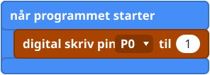
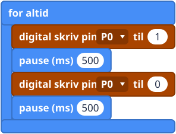
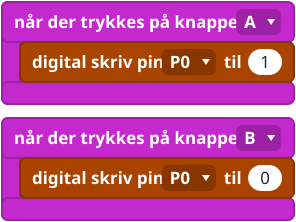

Hvad er det?
En LED-klods er et lille lys på en lille plade med et kabel med tre ledninger. Du sætter kablet i breakout-boardet, og en blok tænder og slukker lyset.
En pin kan sende et 1 ud (tændt: send strøm) eller et 0 (slukket: stop). Blokken digital skriv pin (digital write pin) gør præcis det. Strømmen går ud af pinnen, gennem LED'en og ind igen gennem GND-ledningen (stel). Det er den samme lukkede ring som i boksen om GND på introduktionssiden.
Sæt den i

- Pin 0: det første stik til venstre. Den sorte ledning skal sidde nederst, på den sorte række.
Blokken starter på pin 0, så med pin 0 behøver du ikke at ændre noget. Alle ledige pins virker (se Pins), bare pinnen i blokken passer med den pin, du har sat kablet i.
Blokkene
digital skriv pin ligger i gruppen Pins under Avanceret (Advanced). for altid (forever) og pause ligger i Grundlæggende (Basic).


Små eksempler



Prøv det her
- Få blinket til at gå hurtigere og så langsommere.
- Flyt LED'en over på pin 1, og ret pinnen i blokken, så den passer.
- Sæt en LED mere i pin 2, og få de to til at skiftes.
- Få A til at tænde den og B til at slukke den, og tryk så hurtigt på begge.
- Sværere: få LED'en til at blinke tre gange, når du trykker på A (brug gentag ... gange (repeat) fra gruppen Løkker (Loops)).
Typiske fejl
- LED'en bliver ved med at være slukket. Pinnen i blokken er ikke den pin, du har sat kablet i.
- Der sker stadig ingenting. Tjek, at den sorte ledning sidder på den sorte række. LED'en lyser kun, når den vender rigtigt.
- Den ser aldrig ud til at blinke. Uden pause-blokke tænder og slukker den for hurtigt til, at du kan se det.
Koden skrevet som tekst
JavaScript: pins.digitalWritePin(DigitalPin.P0, 1)
basic.pause(500)
Python: pins.digital_write_pin(DigitalPin.P0, 1)
basic.pause(500)
V1 og V2
Det samme på begge. Hold dig fra de pins, som lysene bruger (se Pins).
Lærernoter
- Tid: cirka 30 minutter.
- Det lærer de: output, tændt/slukket som 1 og 0, og gentagelse med for altid.
- Tjek: LED-klodserne kører på lav spænding og er sikre at røre ved. De fleste problemer skyldes en forkert pin eller en ledning, der vender forkert.
- Billederne af blokkene er forenklede tegninger. Tjek de rigtige blokke i MakeCode.